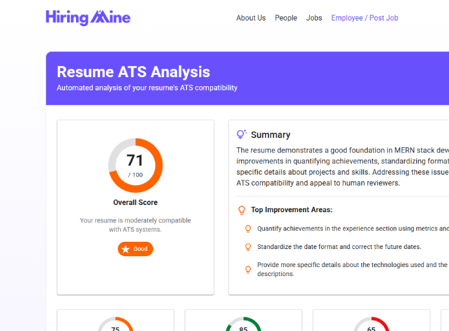
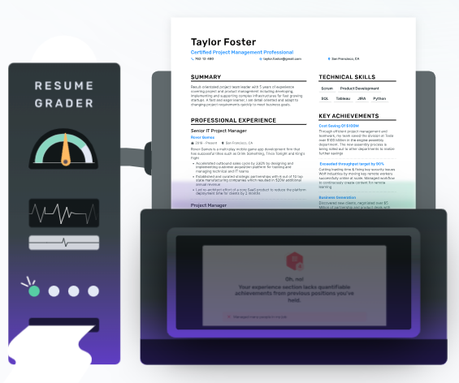
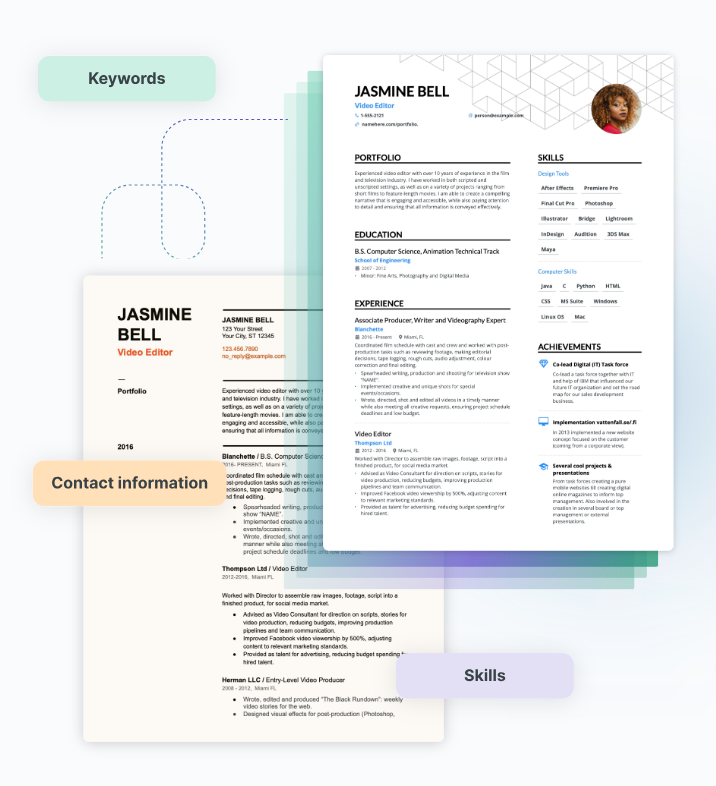

A free and fast AI resume checker doing crucial checks to ensure your resume is ready to perform and get you interview callbacks.
Upload Your Resume
PDF format only, max 5MB


When you’re applying for a job, there’s a high chance your resume will be screened through an applicant tracking system way before it finds its way on a recruiter’s screen. ATS helps hiring managers find the right candidates by searching for keywords and adding the resume to a database.
That’s why the success of your resume is highly dependent on how optimized your resume is for the job you’re applying for, the resume template you’re using, and what skills and keywords you have included.
Similar to an ATS, we analyze and attempt to comprehend your resume. The greater our understanding of your resume, the more effectively it aligns with a company’s ATS.
Although an ATS doesn’t look for spelling mistakes and poorly crafted content, Although an ATS doesn’t look for spelling mistakes and poorly crafted content, recruitment managers certainly do. The second part of our score is based on the quantifiable achievements you have in your resume and the quality of the written content.
We’ve built-in ChatGPT to help you create a resume that’s tailored to the position you’re applying for.
We check for 16 crucial things across 5 different categories on your resume including content, file type, and keywords in the most important sections of your resume.

Part of the resume checker score we assign is based on the parsability rate of your resume. We’ve reverse-engineered the most popular applicant tracking systems currently used and we look for signs of ATS compatibility. For each resume uploaded, we look for skills and keywords connected to the job and industry you’re applying for, readable contact information, file type, and length. Then, we’ll give you suggestions on how to improve your resume.
That’s why the success of your resume is highly dependent on how optimized your resume is for the job you’re applying for, the resume template you’re using, and what skills and keywords you have included.